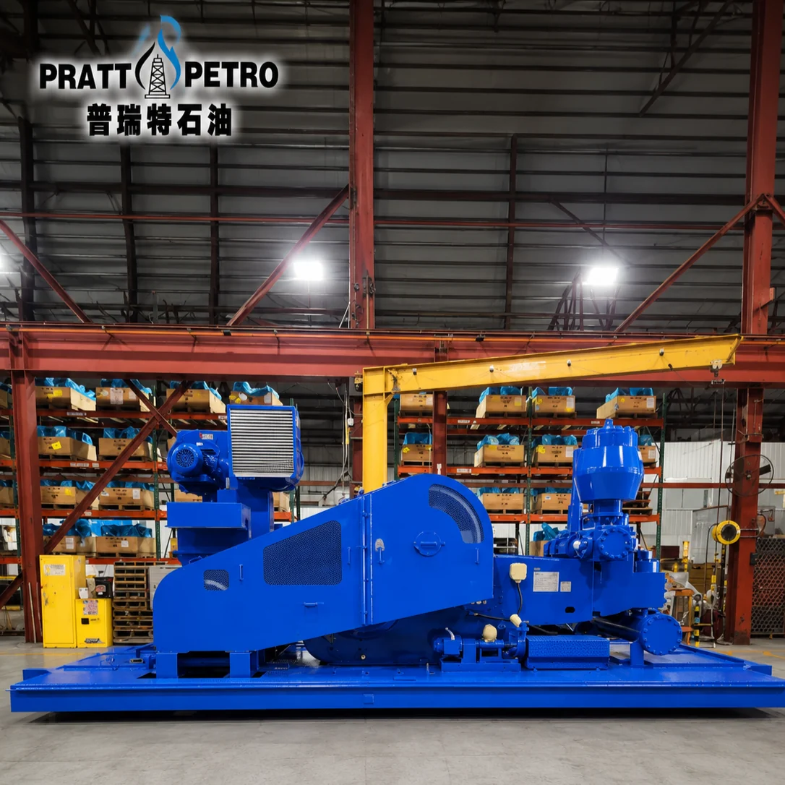

Mud Pump Parts / MODEL RANGE
FB-1600 Mud Pump Spare Parts
Pratt Oil supplies a complete range of spare parts for FB1600 triplex mud pumps used in oil and gas drilling operations.
Send your part number, pump nameplate, drawing or component photos to confirm the correct replacement.

MAINTENANCE / REPAIR / OVERHAUL
Replacement parts we supply
- Fluid end modules
- Liners and pistons
- Valves and valve seats
- Piston rods and extension rods
- Crossheads and guides
- Crankshafts and pinion shafts
- Connecting rods and bearings
- Valve covers and liner retainers
- Seals, gaskets, and repair kits
- Suction and discharge manifold parts
PART NUMBERS / TECHNICAL REFERENCE
FB1600 parts reference
Confirm part numbers, dimensions and equipment configuration before ordering.
For drawing-number lookup and catalog guidance, read FB-1600 Mud Pump Spare Parts Catalog.
Use this reference to prepare your inquiry. Availability and compatibility are confirmed with your quotation.
280 parts in this reference
Download parts list (CSV) ↓| Part number | Description |
|---|---|
| 6316-0374-00 | GENERAL ASSEMBLY, FB-1600 TRIPLEX MUD PUMP (CONSISTS OF THE FOLLOWING) |
| 6316-0022-00 | CROSSHEAD |
| 6316-0226-01 | FRAME ASSEMBLY |
| 6316-0687-00 | GUIDE ASSEMBLY, UPPER CROSSHEAD |
| 6316-0310-00 | SKID, MAIN |
| 6319-0131-00 | PLATE, LOCKING |
| 6316-0099-00 | CRANKSHAFT ASSEMBLY |
| 6316-0688-00 | GUIDE ASSEMBLY, LOWER CROSSHEAD |
| 6316-0098-00 | PINION SHAFT ASSEMBLY |
| 6316-0047-00 | GASKET, CROSSHEAD DOOR |
| 6316-0183-00 | CROSSHEAD ASSEMBLY |
| 7501-0141-00 | CAPSCREW, 1"-8 X 2-1/4" LG. GR. 5 DRLD. HEX HEAD |
| 6316-0375-00 | FLUID END ASSEMBLY |
| 7501-0139-00 | CAPSCREW, 1"-8 X 2-1/2" LG. GR. 5 DRLD. HEX HEAD |
| 6316-0227-00 | LUBRICATION ASSEMBLY |
| 7601-0330-29 | CAPSCREW, 3/8"-16 X .88 LG. HEX HEAD |
| 6397-0668-00 | INDICATOR ASSEMBLY, OIL LEVEL |
| 7601-1320-14 | WASHER, 3/8" LOCK |
| 6397-264-00 | COVER, CLEAN-OUT |
| 7601-0330-76 | CAPSCREW, 5/8"-11 X 1-1/2" LG. HEX HEAD |
| 6397-0186-00 | CAP, BREATHER |
| 7601-1330-05 | WASHER, 5/8" SMALL O.D. PLAIN |
| 6316-0259-00 | SHIM SET (AS REQUIRED) |
| 7602-5312-40 | WIRE, .06 DIA. X 240.00 LG. STAINLESS STEEL |
| 6316-0127-00 | GASKET, DOOR |
| 7601-2580-06 | NIPPLE, 3/8" X 2" LG. PIPE |
| 7502-0581-00 | GASKET, CLEAN-OUT COVER |
| 7601-2730-07 | CONNECTOR, 5/8"-18 X 3/8" MPT MALE |
| 7602-5940-19 | GASKET, GEAR CASE COVER |
| 7508-0020-31 | TUBING ASSEMBLY, 3/8" COPPER |
| 7502-0103-00 | GASKET, INSPECTION DOOR |
| 7602-2131-47 | SEAL, SINGLE LIP OIL |
| 7506-0032-00 | PLATE, OIL LEVEL NAME |
| 7602-1600-39 | "O"-RING |
| 7602-1070-13 | COPPER WOOL (2 OZ.) |
| 6397-0548-00 | SPRING, DIAPHRAGM STUFFING BOX |
| 6316-0126-00 | PLATE, COVER |
| 7602-2132-76 | SEAL, DOUBLE LIP OIL |
| 7507-0200-00 | STUD, BREATHER CAP |
| 6397-0546-00 | SPRING, DIAPHRAGM STUFFING BOX LOCK |
| 7601-0338-08 | CAPSCREW, 1"-8 X 3" LG. HEX HEAD |
| 6316-0023-00 | STRAP, F-1600 ECCENTRIC |
| 7601-0330-51 | CAPSCREW, 1/2"-13 X 1-1/2" LG. HEX HEAD |
| 6317-0026-00 | STRAP, F-1300 ECCENTRIC |
| 7601-1060-06 | SCREW, #6 X 3/8" P.K. DRIVE |
| 7601-0330-77 | CAPSCREW, 5/8"-11 X 1-3/4" LG. HEX HEAD |
| 7601-1060-09 | SCREW, #8 X 5/8" P.K. DRIVE |
| 7601-1320-49 | WASHER, 5/8" LOCK |
| 7601-0720-17 | NUT, 1"-8 HEAVY HEX LOCK |
| 6317-0093-00 | BAFFLE, DISCHARGE FLUID |
| 7601-1330-04 | WASHER, 1/2" PLAIN |
| 6316-0045-00 | DOOR, CROSSHEAD |
| 7601-0341-86 | CAPSCREW W/NYLOK LOCK, 3/4"-10 X 2-1/2" LG. SOCKET HEAD |
| 7601-0610-12 | NUT, 5/8"-11 HEX |
| 7602-1070-03 | FILTER, OIL STRAINER |
| 7601-1320-30 | WASHER, 5/8" LOCK |
| 7602-1150-98 | GAUGE (0-160 P.S.I.), OIL PRESSURE |
| 6316-0349-00 | COVER WITH COUPLING, CLEAN-OUT |
| 7602-2914-78 | VALVE, RELIEF |
| 6317-0164-00 | TANK, 90 GALLON RECIRCULATING |
| 6397-0316-01 | JET, OIL |
| 6316-0284-00 | FOOT, MOUNTING |
| 6920-0259-00 | MANIFOLD |
| 6316-0020-20 | CRANE, F.E. EXPENDABLE SERVICE |
| 7602-1830-82 | PUMP WITHOUT RELIEF VALVE, OIL |
| 7601-1430-03 | WASHER, 1" HARDENED |
| 6319-0095-00 | SHIM SET |
| 6316-0068-00 | COVER, GEAR CASE |
| 6316-0124-00 | PLATE, OIL PUMP MOUNTING |
| 7510-0201-00 | DOOR, INSPECTION |
| 6316-0169-00 | MANIFOLD, CROSSHEAD |
| 7506-0419-50 | PLATE, NAME |
| 7514-0212-00 | CLAMP, 3/8" TUBING (SINGLE) |
| 7601-0331-34 | CAPSCREW, 1"-8 X 3-1/4" LG. HEX HEAD |
| 7514-0209-00 | CLAMP, 3/8" TUBING (DOUBLE) |
| 7601-0610-18 | NUT, 1"-8 HEX |
| 7514-0231-00 | CLAMP, 3/8" TUBING (TRIPLE) |
| 7601-1320-33 | WASHER, 1" LOCK |
| 7514-0007-00 | CLAMP, 1/2" TUBING (SINGLE) |
| 6316-0279-00 | SPACER |
| 7601-2590-94 | PLUG, 1/4"-18 COUNTERSUNK ALLEN HEAD PIPE |
| 7601-2070-08 | FITTING, 1/8" GREASE |
| 7601-0330-03 | CAPSCREW, 1/4"-20 X 3/4" LG. HEX HEAD |
| 6316-0375-00 | FLUID END ASSMBLY (CONSISTS OF THE FOLLOWING) |
| 7601-1320-38 | WASHER, 1/4" LOCK |
| 6316-0357-00 | FLUID END, STUDDED |
| 7601-0330-32 | CAPSCREW, 3/8"-16 X 1-1/2" LG. HEX HEAD |
| 6316-0039-00 | COVER, VALVE POT |
| 6397-0575-00 | GUIDE, UPPER VALVE |
| 7601-2730-08 | CONNECTOR, 1/2" INV. |
| 6397-0603-00 | RETAINER, VALVE GUIDE |
| 6319-0094-00 | GEAR, OIL PUMP |
| 6316-0043-00 | MANIFOLD, DISCHARGE |
| 7504-0002-00 | KEY, 3/16" X 3/16" X 1" LG. |
| 6316-0354-00 | GUIDE, BUSHING AND LOWER VALVE |
| 7601-2750-35 | ELBOW, 90 DEG. MALE |
| 6316-0363-00 | RING, ALIGNMENT |
| 7601-2550-27 | COUPLING, 1/2" X 3000# PIPE |
| 6316-0360-00 | BOLT, VALVE GUIDE LOCK |
| 7601-2530-04 | BUSHING, 1/2" X 1/8" |
| 6316-0365-00 | PLATE, WEAR |
| 7508-0240-37 | TUBING ASSEMBLY, 1/2" COPPER |
| 6316-0364-00 | PLUG, CYLINDER HEAD |
| 7601-2550-85 | COUPLING, 1/2" STD. PIPE |
| 6316-0362-00 | HEAD, CYLINDER |
| 7601-2091-39 | ADAPTER, 3/4" FNPT X 1/2" MNPT REDUCING |
| 6316-0361-00 | RING, CYLINDER THREAD |
| 7601-2590-76 | PLUG, 1/4" PIPE |
| 6316-0201-00 | MANIFOLD, SUCTION |
| 7601-2810-03 | UNION |
| 6316-0105-00 | FLANGE, SUCTION |
| 7601-2730-04 | CONNECTOR, MALE |
| 6317-0074-00 | FLANGE, BLIND |
| 7601-2730-86 | CONNECTOR, MALE |
| 6316-0367-00 | LOCK, LINER |
| 7601-2752-00 | ELBOW, MALE |
| 6316-0366-00 | RING, LINER THREAD |
| 7601-2810-02 | UNION |
| 6316-0373-00 | SEAL |
| 7601-2750-04 | ELBOW, MALE |
| 7506-0378-00 | PLATE, INFORMATION |
| 7601-2750-05 | ELBOW, MALE |
| 7602-1600-25 | "O"-RING |
| 7601-2750-06 | ELBOW, MALE |
| 7602-1600-52 | "O"-RING |
| 7601-2750-27 | ELBOW, 45 DEGREE MALE |
| 7602-1600-61 | "O"-RING |
| 7508-0770-28 | TUBING ASSEMBLY, 3/8" COPPER |
| 7601-1060-06 | SCREW, NO. 6 X 3/8 P.K. DRIVE |
| 7508-0320-19 | TUBING ASSEMBLY, 5/16" COPPER |
| 7503-0230-49 | HOSE ASSEMBLY 1/2" |
| 7508-0770-19 | TUBING ASSEMBLY, 5/16" COPPER |
| 7601-2570-89 | ELBOW, 1/2" X 90 DEG. GALV. STREET |
| 7508-0490-19 | TUBING ASSEMBLY, 5/16" COPPER |
| 7601-2530-40 | BUSHING, 1" X 1/2" GALV. |
| 7508-0120-19 | TUBING ASSEMBLY, 5/16" COPPER |
| 7601-2090-40 | ADAPTER, 90 DEG. ELBOW |
| 7508-0130-45 | TUBING ASSEMBLY, 5/8" COPPER |
| 7501-0051-00 | SCREW, RETAINER |
| 7508-0270-45 | TUBING ASSEMBLY, 5/8" COPPER |
| 7602-5280-72 | WIRE, .063 DIA. X 6 FT. LG. SOFT |
| 7508-0120-40 | TUBING ASSEMBLY, 1/2" COPPER |
| 7601-0331-39 | CAPSCREW, 1"-8 X 5" LG. HEX HEAD |
| 7508-0910-19 | TUBING ASSEMBLY, 5/16" COPPER |
| 7601-0630-20 | NUT, 1"-8 HEAVY HEX |
| 7508-0630-19 | TUBING ASSEMBLY, 5/16" COPPER |
| 7601-0333-30 | CAPSCREW, 7/8"-9 X 2-1/2" LG. GR. 5 HEX HEAD |
| 7508-0200-22 | TUBING ASSEMBLY, 5/16" COPPER |
| 7602-0661-11 | SEAL, RING JOINT |
| 7508-0360-22 | TUBING ASSEMBLY, 5/16" COPPER |
| 6316-0369-00 | SEAL, HEAD |
| 7508-0300-22 | TUBING ASSEMBLY, 5/16" COPPER |
| 6316-0092-00 | SEAL, VALVE POT COVER |
| 7508-0090-22 | TUBING ASSEMBLY, 5/16" COPPER |
| 6316-0373-00 | SEAL, LINER |
| 7508-0470-22 | TUBING ASSEMBLY, 5/16" COPPER |
| 6316-0359-00 | ROD, PISTON |
| 7508-0400-22 | TUBING ASSEMBLY, 5/16" COPPER |
| 6316-0107-11 | CLAMP, PISTON ROD |
| 7508-0330-28 | TUBING ASSEMBLY, 3/8" COPPER |
| 7601-0720-58 | NUT, 1-1/2"-8 HEAVY LOCK |
| 6316-0265-00 | PUMP ASSEMBLY LESS MOTOR, CENTRIFUGAL |
| 7601-2588-50 | PIPE, 1/2" X 13" LG. GALV. (T.O.E.) |
| 7602-0720-04 | CLAMP, 2" HOSE |
| 7601-1260-47 | STUD WITH NUTS, 1-1/2"-8 UNC-2A X 10" LG. |
| 7602-0720-41 | CLAMP, 2-1/2" HOSE |
| 6316-0356-00 | FLUID END |
| 7503-0480-66 | HOSE ASSEMBLY, 1" I.D. |
| 6316-0164-00 | COVER, LINER END |
| 7601-3240-24 | HOSE, 1-1/2" I.D. X 2 FT. LONG |
| 6316-0333-00 | RING, LINER LOCK |
| 7601-4310-36 | HOSE, 2-1/2" I.D. X 36" LG. |
| 7602-1600-44 | "O"-RING |
| 7601-2090-28 | ADAPTER, 1-5/16"-14 X 1" LG. MALE PIPE |
| 6316-0096-00 | BUSHING, VALVE GUIDE |
| 7602-2910-19 | VALVE, 1" GLOBE |
| 6316-0093-00 | DISC, FLUID BAFFLE |
| 7601-2570-91 | ELBOW, 1" X 90 DEG. GALV. STREET |
| 7601-2570-93 | ELBOW, 1-1/2" X 90 DEG. GALV. |
| 6316-0098-00 | PINION SHAFT ASSEMBLY (CONSISTS OF THE FOLLOWING) |
| 7601-2570-47 | ELBOW, 2-1/2" X 90 DEG. GALV. |
| 6317-0027-00 | SHAFT, PINION |
| 7601-2581-60 | NIPPLE, 1" X CLOSE GALV. PIPE |
| 6301-0002-00 | RING, OIL SEAL WEAR |
| 7601-2582-34 | NIPPLE, 2-1/2" X 4" LG. GALV. PIPE |
| 6317-0024-00 | CARRIER, PINION BEARING |
| 7601-2530-98 | BUSHING, 2-1/2" X 1-1/2" HEX HEAD GALV. PIPE |
| 7502-0840-00 | GASKET, PINION BEARING CARRIER |
| 7601-2588-24 | NIPPLE, 2-1/2" X 12" LG. GALV. PIPE |
| 7601-0336-00 | CAPSCREW, 7/8"-9 X 2" LG. GR. 5 HEX HEAD |
| 7601-2582-38 | NIPPLE, 2-1/2" X 8" LG. GALV. PIPE |
| 6317-0023-00 | CARRIER, OIL SEAL |
| 7601-2583-84 | NIPPLE, 1-1/2" COMBINATION HOSE |
| 7502-0841-00 | GASKET, OIL SEAL CARRIER |
| 7601-2583-52 | NIPPLE, 2-1/2" COMBINATION HOSE |
| 7601-0332-20 | CAPSCREW, 1/2"-13 X 1-1/2" LG. GR. 5 HEX HEAD |
| 7602-0661-45 | GASKET, 1-1/2" 150# FLANGE |
| 7601-1320-19 | WASHER, 7/8" LOCK |
| 7602-0661-44 | GASKET, 1" 150# FLANGE |
| 7601-1320-16 | WASHER, 1/2" LOCK |
| 7601-2060-13 | FLANGE, 1-1/2" 150# THREADED |
| 7602-2131-18 | SEAL, OIL |
| 7601-2063-17 | FLANGE, 1" 150# THREADED |
| 7602-0212-67 | BEARING |
| 7601-1261-19 | BOLT WITH NUTS, 1/2"-13 X 2-1/2" LG. STUD |
| 7504-7501-00 | KEY |
| 7601-1261-20 | BOLT WITH NUTS, 1/2"-13 X 2-3/4" LG. STUD |
| 6317-0103-00 | COVER |
| 6922-0062-00 | SD-8 SUCTION DESURGER ASSEMBLY (CONSISTS OF THE FOLLOWING) |
| 6316-0099-00 | CRANKSHAFT ASSEMBLY (CONSISTS OF THE FOLLOWING) |
| 6922-0054-00 | BLADDER |
| 6316-0021-01 | CRANKSHAFT |
| 6922-0066-00 | ROD, SUPPORT |
| 6316-0023-00 | STRAP, ECCENTRIC |
| 6922-0063-00 | FLANGE, CHARGING |
| 6316-0034-00 | RETAINER, OUTER RACE |
| 6922-0048-01 | FLANGE, ADAPTER |
| 6316-0070-00 | RETAINER, INNER RACE |
| 6922-0065-00 | PLUG, END |
| 6316-0071-00 | RETAINER, INNER RACE (CENTER) |
| 7602-0721-30 | CLAMP, HOSE |
| 6317-0176-00 | RETAINER, INNER BEARING |
| 6022-0053-00 | GASKET |
| 6316-0030-00 | GEAR, ECCENTRIC RING |
| 7601-0330-77 | CAPSCREW, 5/8" X 1-3/4" LG. HEX HEAD |
| 6316-0049-00 | GASKET, MAIN BEARING COVER |
| 7602-2910-77 | VALVE, 1/4" NEEDLE |
| 6316-0032-00 | RETAINER, MAIN BEARING OUTER RACE |
| 7601-2530-01 | BUSHING, 1/4" X 1/8" HEX HEAD PIPE |
| 6316-0031-00 | RETAINER, MAIN BEARING INNER RACE |
| 7602-2918-05 | VALVE WITH VALVE STEM, 1/8" TANK |
| 6316-0037-00 | CARRIER, BEARING (LEFT) |
| 6922-0067-00 | GUARD, VALVE |
| 6316-0288-00 | CARRIER, BEARING (RIGHT) |
| 7601-0330-01 | CAPSCREW, 1/4"-20 X 1/2" LG. HEX HEAD |
| 6316-0091-00 | SPACER, MAIN BEARING |
| 6316-0077-00 | BOLT, MAIN BEARING HOUSING |
| 6316-0097-00 | SHIM SET, MAIN BEARING HOUSING |
| 7601-2590-08 | PLUG, 1/4" PIPE |
| 7501-0004-00 | SCREW, 5/8" X 1-1/2" LG. DRLD. HEX HEAD |
| 6917-0039-00 | DISCHARGE STRAINER ASSEMBLY (CONSISTS OF THE FOLLOWLOWING) |
| 7501-1256-00 | CAPSCREW, 5/8" X 4-1/2" LG. DRLD. SOCKET HEAD |
| 6317-0049-00 | HOUSING ASSEMBLY, STRAINER |
| 7602-0212-68 | BEARING, ECCENTRIC |
| 6397-0290-00 | STRAINER ASSEMBLY |
| 7602-0201-37 | BEARING, MAIN |
| 7602-1600-40 | GASKET, STRAINER |
| 7602-5289-60 | WIRE, 1/16" DIA. X 80 FT. LONG SOFT IRON |
| 6397-0293-01 | STRAINER |
| 7602-5200-60 | WIRE, 11GA. X 5 FT. LONG SOFT IRON |
| 7507-2201-00 | STUD, 1-1/2" - 8 X 6.88 LG |
| 7601-0630-17 | NUT, 1-1/2" - 8 HEAVY HEX |
| 7601-0335-97 | CAPSCREW, 1-1/2"-6 X 5-1/2" LG. GR. 5 HEX HEAD |
| 6923-0016-00 | 3" TYPE B SHEAR RELIEF VALVE ASSEMBLY (CONSISTS OF THE FOLLOWING) |
| 6923-0006-00 | STEM, PLUNGER |
| 7601-0720-20 | NUT, 1-1/2"-6 HEAVY HEX LOCK |
| 6923-0007-00 | SEAL, PLUNGER |
| 6316-0042-00 | COVER, MAIN BEARING |
| 6923-0011-00 | PIN, SHEAR BAR |
| 6301-0038-00 | BEARING, CROSSHEAD |
| 7601-0335-43 | CAPSCREW, 3/8"-16 X 4-1/2" LG. CAD PLTD. HEX HEAD |
| 7602-3010-47 | WRENCH, MAIN BEARING BOLT |
| 6923-0012-00 | BUMPER |
| 6316-0183-00 | CROSSHEAD ASSEMBLY (CONSISTS OF THE FOLLOWING) |
| 6923-0013-00 | SPRING, COVER |
| 6397-0544-00 | STUFFING BOX, DIAPHRAGM |
| 6923-0014-00 | COVER |
| 7601-1610-22 | "O"-RING |
| 6923-0015-00 | ADAPTER, THREADED |
| 6316-0081-00 | GASKET, DIAPHRAGM PLATE |
| 7506-0087-00 | PLATE, NAME |
| 6316-0028-00 | EXTENSION, CROSSHEAD |
| 6923-0096-00 | BAR, SHEAR |
| 7501-1269-00 | CAPSCREW, 1"-8UNC-2B X 2-1/2" LG. SOCKET HEAD |
| 6923-0018-00 | BODY |
| 6316-0087-00 | PIN, CROSSHEAD |
| 7601-1060-03 | SCREW, NO. 4 X .31 LG. DRIVE |
| 6316-0026-00 | RETAINER, CROSSHEAD PIN |
| 7601-0720-25 | NUT, NO. 8 - 32 LIGHT THIN LOCK |
| 7601-0720-26 | NUT, 3/8"-16 LIGHT LOCK |
Build your FB1600 parts list.
Send the pump model, required parts and quantities. Include drawings or nameplate photos to help confirm fit.
Jinan Pratt Oil Equipment Co., Ltd. · 2000@pratt-oil.com